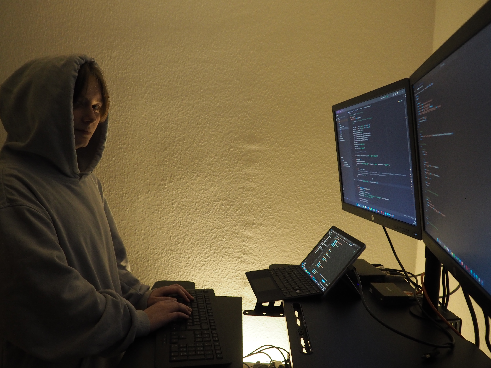

Softwareentwicklung bietet mir ein Umfeld indem ich kreativ sein kann.
Ich liebe es in den Code einzutauchen und Lösungen zu entwickeln, die meine Mitmenschen und mich weiter bringen. Ich bin sehr ehrgeizig und geduldig, wenn ich meine Ziele erreichen möchte - ob Morgens in meinen Lieblingsfächern Datenverarbeitung und Englisch oder bis spät in den Abend, wenn ich neue spannende Dinge in der IDE teste.
Ich liebe es in den Code einzutauchen und Lösungen zu entwickeln, die meine Mitmenschen und mich weiter bringen. Ich bin sehr ehrgeizig und geduldig, wenn ich meine Ziele erreichen möchte - ob Morgens in meinen Lieblingsfächern Datenverarbeitung und Englisch oder bis spät in den Abend, wenn ich neue spannende Dinge in der IDE teste.

© Natalie Dik